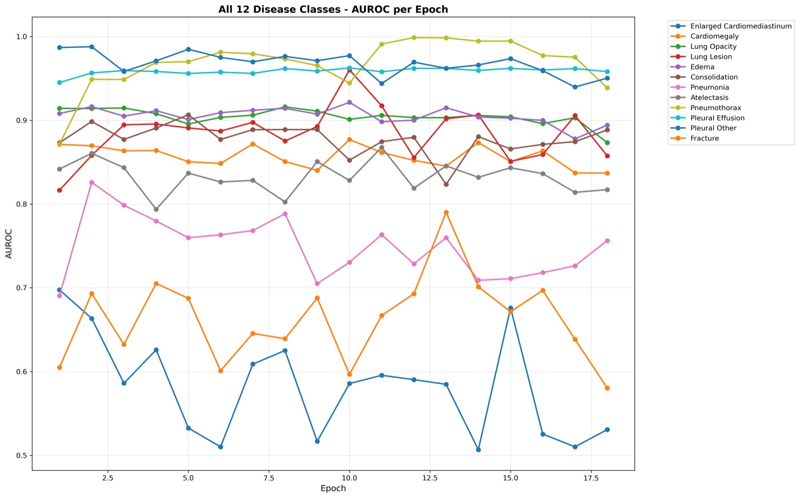
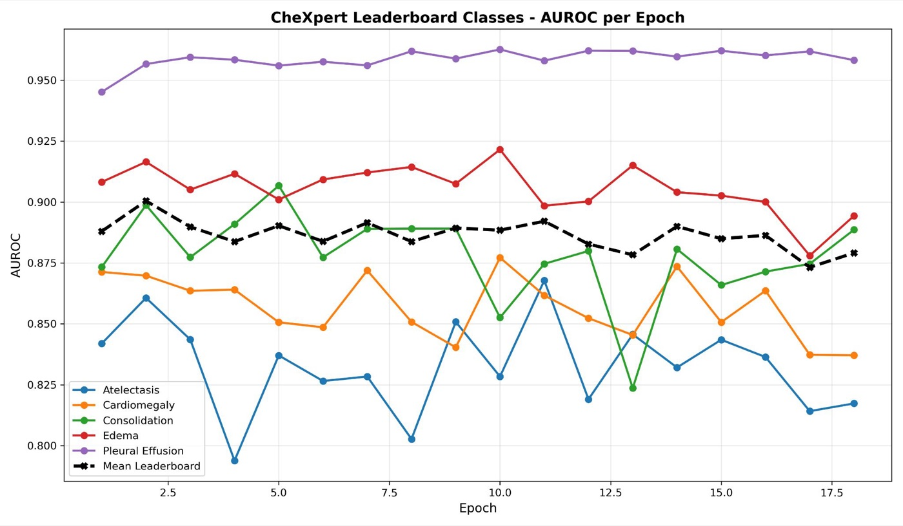
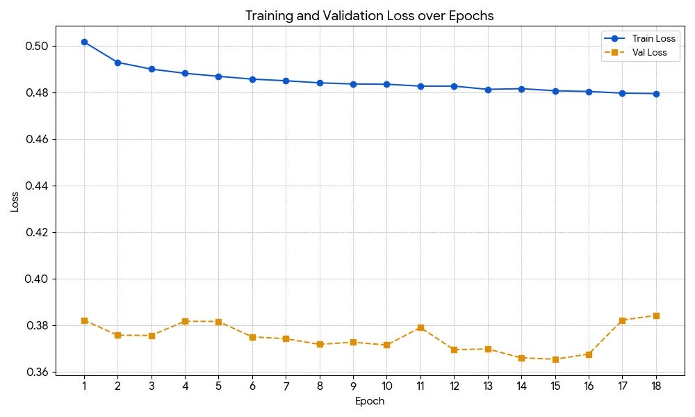
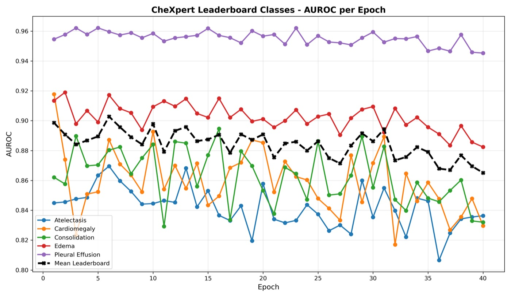

The task
CheXpert is Stanford's chest X-ray benchmark. Each image carries 14 observations, and the model predicts all 14 at once. Headline scores use the five pathologies on the CheXpert leaderboard: Atelectasis, Cardiomegaly, Consolidation, Edema and Pleural Effusion.
The hard part is the labels. They were mined from radiology reports, so many are marked uncertain
(-1) rather than present or absent: about 139k in the training set. Treat every -1
as a target and the loss learns noise; throw them all away and some classes lose most of their positives.
Approach
The backbone is Swin Transformer Base (swin_base_patch4_window7_224) with ImageNet-pretrained
weights from timm, a 224×224 input and 14 output logits, followed by Dropout(0.5).
A policy per class for uncertain labels
Instead of one rule for every class, each class gets the policy that suits it:
- Cardiomegaly: U-Ones. An uncertain label is treated as positive (
-1 → 1). - Pleural Effusion: U-Zeros. An uncertain label is treated as negative (
-1 → 0). - The other 12 classes: U-Ignore. Uncertain entries are masked out of the loss, so they contribute no gradient.
The masked binary cross-entropy averages only over labels that are 0 or 1. Training uses AdamW (learning rate 1e-4, weight decay 0.1), batch size 96, mixed precision, and flip, rotation, affine and color-jitter augmentation.
Compute
Training ran as SLURM jobs on ASU's Sol supercomputer, one GPU per job, with each job resuming from the
latest checkpoint. The script switches to PyTorch nn.DataParallel when more than one GPU is
visible. The reported run stopped after 18 epochs. The original training log (Nov 9 to 10, 2025) and test log
(Nov 11, 2025) are in the repo, and every number on this page traces back to them.
Results
Every epoch's checkpoint was scored on the 668-image test set. The best mean AUC, 0.9004, came at epoch 2.
| Pathology | CheXpert paper (U-Ignore) | Swin-B, epoch 2 |
|---|---|---|
| Atelectasis | 0.818 | 0.8606 |
| Cardiomegaly | 0.828 | 0.8697 |
| Consolidation | 0.938 | 0.8987 |
| Edema | 0.934 | 0.9165 |
| Pleural Effusion | 0.928 | 0.9566 |
| Mean | 0.8892 | 0.9004 |
Swin is higher on mean AUC (+0.0112) and on three of five classes: Atelectasis (+0.043), Cardiomegaly (+0.042) and Pleural Effusion (+0.029). The paper stays ahead on Consolidation and Edema. Leaderboard entries are still higher: the top entry, an ensemble, scores 0.930, and the single model at rank 86 scores 0.911.
All 14 classes
The test job scored all 14 outputs, not only the five on the leaderboard. At the same epoch-2 checkpoint, 11 classes clear 0.85 AUC and four clear 0.94. Three stay weak: Pneumonia, Fracture and Enlarged Cardiomediastinum.
| Class | Epoch 2 | Lowest (18 epochs) | Highest (18 epochs) |
|---|---|---|---|
| Pleural Other | 0.9879 | 0.9398 | 0.9879 |
| Support Devices | 0.9580 | 0.9299 | 0.9725 |
| Pleural Effusion | 0.9566 | 0.9452 | 0.9626 |
| Pneumothorax | 0.9489 | 0.8717 | 0.9988 |
| Edema | 0.9165 | 0.8780 | 0.9215 |
| Lung Opacity | 0.9142 | 0.8735 | 0.9162 |
| Consolidation | 0.8987 | 0.8236 | 0.9067 |
| No Finding | 0.8797 | 0.8684 | 0.8978 |
| Cardiomegaly | 0.8697 | 0.8371 | 0.8771 |
| Atelectasis | 0.8606 | 0.7938 | 0.8678 |
| Lung Lesion | 0.8582 | 0.8166 | 0.9602 |
| Pneumonia | 0.8260 | 0.6906 | 0.8260 |
| Fracture | 0.6931 | 0.5803 | 0.7903 |
| Enlarged Cardiomediastinum | 0.6634 | 0.5067 | 0.6975 |

The rarer findings move the most from epoch to epoch. Lung Lesion ranges from 0.8166 to 0.9602 and Fracture from 0.5803 to 0.7903, so a single epoch's number for those classes says less than it does for Pleural Effusion, which never leaves a 0.02 band.
Peak came early
The mean AUC peaked at epoch 2 (0.9004) and then sat between about 0.873 and 0.892 for the remaining 16 epochs. Extra training gave no net gain. Pleural Effusion is the easiest leaderboard class (0.945 to 0.963); Atelectasis is the hardest and least stable (0.794 to 0.868).

No single epoch is best for every class. Edema, Cardiomegaly and Pleural Effusion each peak at epoch 10, Consolidation at epoch 5 and Atelectasis at epoch 11, so the epoch-2 checkpoint is a compromise across classes.

Self-training
The reported run masks most uncertain labels out of the loss, so that data goes unused. A supplementary teacher–student experiment, run after the main result, tries to recover it.
For each class, the checkpoint from that class's best test-AUC epoch makes the predictions.
The teacher predicts only where the label is -1; certain labels are kept. Soft variant:
the probability itself. Thresholded: at or above the high cut becomes 1, at or below the low cut becomes
0, anything between stays soft.
Restarts from ImageNet weights with the same recipe, trained with unmasked BCE on the pseudo-labels.
Every student checkpoint is scored with the same test script, and the best epoch is picked the same way.
| Student | Pseudo-labels (high / low) | Epochs run | Best epoch | Mean 5-class AUC | vs teacher |
|---|---|---|---|---|---|
| Soft | teacher probability | 19 | 3 | 0.8995 | −0.0009 |
| thresh1 | 0.5 / 0.5 | 23 | 3 | 0.8914 | −0.0090 |
| thresh2 | 0.6 / 0.4 | 36 | 4 | 0.9026 | +0.0022 |
| thresh3 | 0.7 / 0.3 | 31 | 7 | 0.9018 | +0.0014 |
| thresh4 | 0.8 / 0.2 | 28 | 4 | 0.9020 | +0.0016 |
| thresh5 | 0.9 / 0.1 | 40 | 6 | 0.9028 | +0.0024 |
| Teacher (reported run) | none | 18 | 2 | 0.9004 | 0.0000 |
Four of the five thresholded students beat the teacher, by +0.0014 to +0.0024. The pattern is consistent: confident cuts help a little, while turning every pseudo-label into a hard 0 or 1 (0.5 / 0.5) hurts most and drops Atelectasis to 0.8218.
| Pathology | Teacher, epoch 2 | Best student, epoch 6 | Change |
|---|---|---|---|
| Atelectasis | 0.8606 | 0.8696 | +0.0090 |
| Cardiomegaly | 0.8697 | 0.8872 | +0.0175 |
| Consolidation | 0.8987 | 0.8803 | −0.0184 |
| Edema | 0.9165 | 0.9171 | +0.0006 |
| Pleural Effusion | 0.9566 | 0.9596 | +0.0030 |
| Mean | 0.9004 | 0.9028 | +0.0024 |

As with the teacher, the gain arrives in the first few epochs and longer training does not add to it. The student's gains on Cardiomegaly and Atelectasis are mostly cancelled by its loss on Consolidation, which is why the mean moves so little.
Other methods tried
The module keeps every training method from the project as its own script rather than one merged pipeline.
LibAUC AUROC fine-tuning
Fine-tunes a checkpoint by optimizing AUROC directly with PESG and an AUC-margin loss. The script does not run as written: its loss and optimizer calls match no released libauc version.
Baseline and CLI policy mapping
A plain baseline passes -1 straight to the loss as a target. A CLI variant maps uncertain
labels per class, but its "U-Ignore" maps -1 → 0 instead of masking. Neither produced the
reported result.
A separately trained teacher with its own policies is also in the repo. It was not used for the self-training results above.
Caveats
- The best epoch was picked on test AUC. Every checkpoint was scored on the test set and the best one chosen from those scores; there was no separate validation-based selection, so model choice and reporting share the same 668 images.
- The paper comparison is indicative. The paper's numbers are validation AUC; the Swin numbers are test AUC.
- It is not a pure U-Ignore comparison. The run used U-Ignore for 12 of 14 classes but U-Ones and U-Zeros for Cardiomegaly and Pleural Effusion. The original slides said U-Ignore; the code says otherwise, and the repo corrects it.
- Self-training is supplementary and also test-picked. The student gains (+0.0014 to +0.0024) are smaller than the teacher's own epoch-to-epoch swing (0.873 to 0.900). They suggest confident pseudo-labels help a little; they do not prove it.
- The weak classes are weak. Fracture and Enlarged Cardiomediastinum stay below 0.80 AUC at every epoch, so the 14-class model is not uniformly strong.